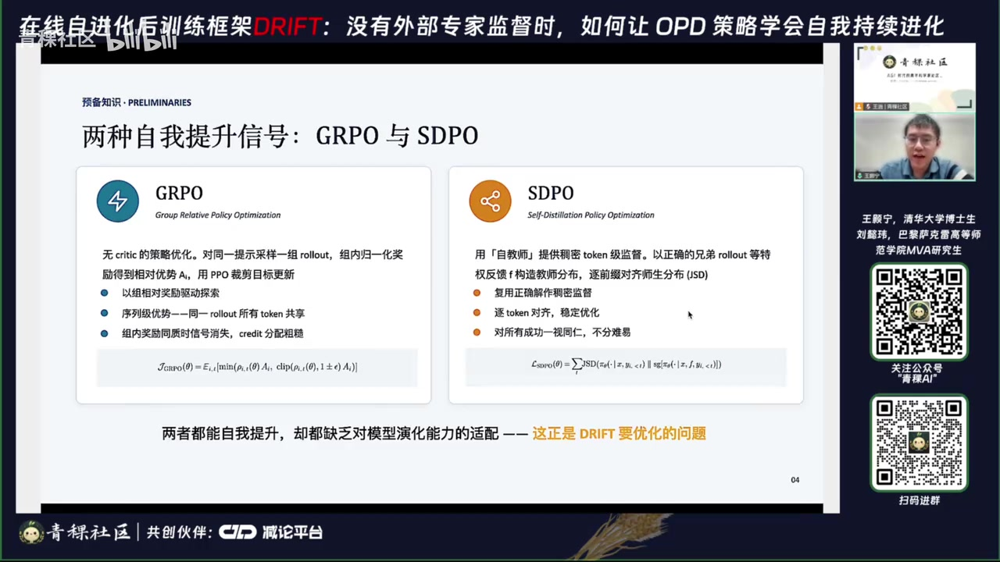
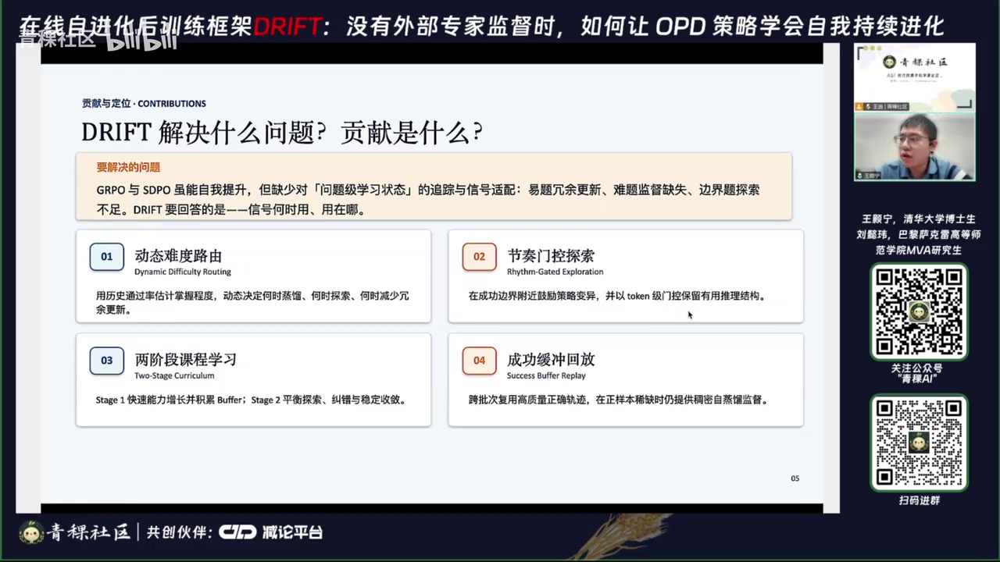
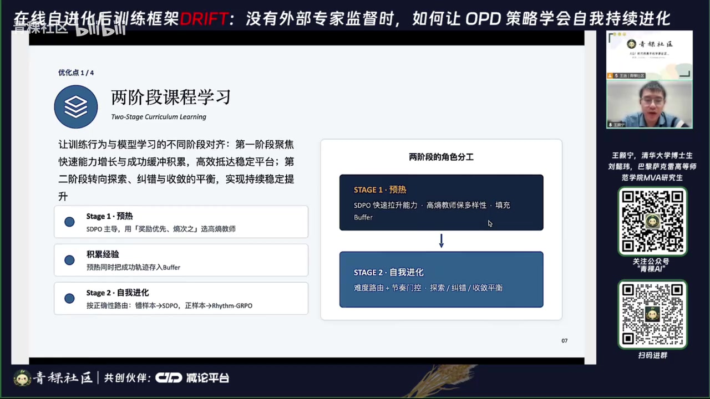
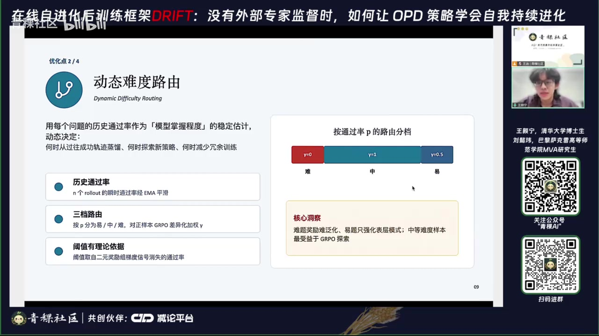
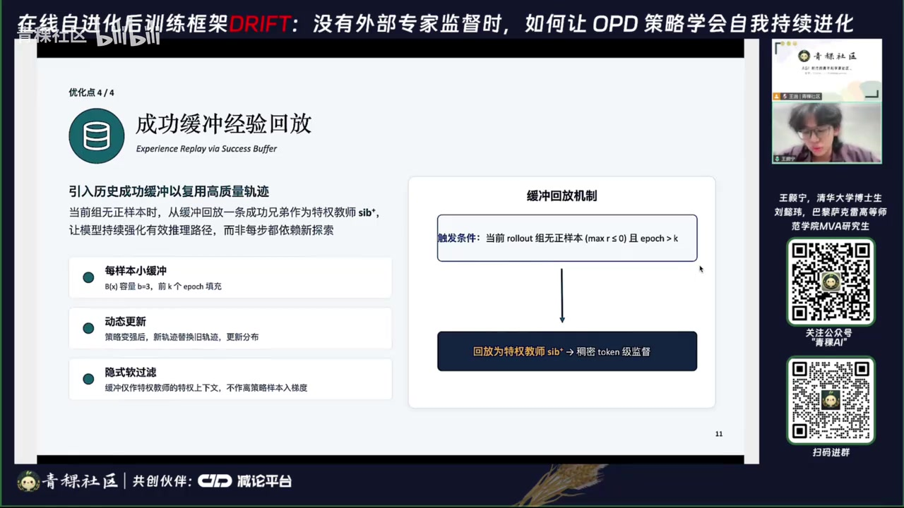
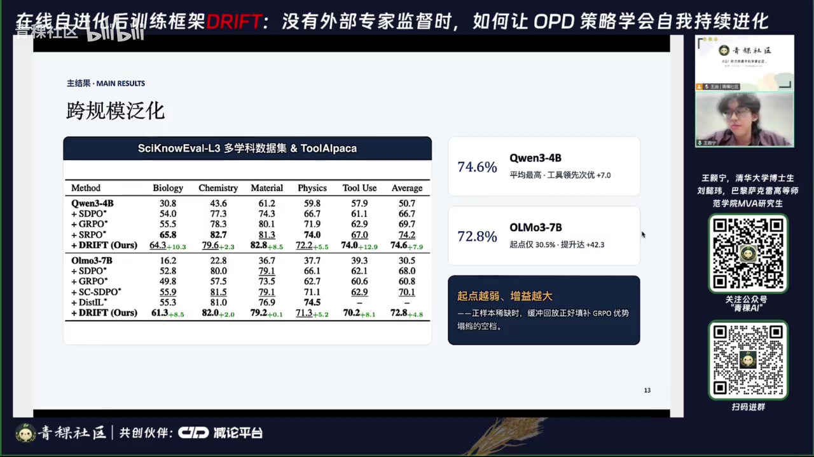

原视频讲述 · 第 1 部分
00:01大家好，我是王浩宁，是清华大学数学系的四年级博士生，也是来自贝壳 a 尹俊熙老师团队的实习生。很高兴今天能有这个机会和线上的各位伙伴交流分享我们的工作。大家好，我是刘一伟，是巴黎萨克雷高等师范学院 ma 的研究生，也是来自贝壳埃李云熙老师团队的实习生。很高兴今天有这个机会线场分享我们的工作成果。下面由我来先给大家介绍我们这个工作的前半部分啊今天向大家分享的这个工作叫 drift。简单来说呢，这是一个面向大模型的在线自净化后训练框架。
00:46我们希望回答的一个核心问题是在没有外部专家示范的前提下，如何让模型稳定的自我提升。接下来呢我先从为什么需要自我进化这一点开始讲起。近两年来呢大模型在数学推理、科学问题求解、工具调用等复杂任务上进步的很快，除了继续的扩大预训练之外。另一条越来越重要的路线就是让模型从自己产生的轨迹去学习嗯。要么用可验证奖励，也就是嗯 l vr 去做强化学习，要么用自身的正确解等特群信息去做自蒸流。这条路径呢它可以大幅的减少对人类专家示范的依赖，为所谓的自我进化提供一条可扩展的路径。
01:36落到两类具体方法上，一类是这个强化学习，以加 po 为代表，他用组内的相对奖励去驱动探索，但当这个正量本稀疏或者奖励分布不稳的时候，他的更新噪声会比较大。自蒸流的话，这边我们指的这个自蒸流也是这边写的 spu 它并不是举某指某一个具体的算法，而是用来指代这个自蒸流这一系列的工作。比如这个 opsd s po spo 这一类的，这边这个 sd 指的是这个 self dilation。这这类算法呢它复用模型自身的正确解或者其他的特权信息，他们能够提供密的 token 级的这两条路径呢都能提升模型的能力。
02:21但是他们有一个共同的问题，就是他们很少随着模型当前的能力去自适应的调整。在这边呢我我我想想澄清一个用词上的选择，就是为什么我们强调自蒸流 S P U 而不是用这个经典在线策略蒸馏 opd，因为我们在这边想要真正强调是所谓的自净化的概念。经典的 opd 呢它更偏向从一个参数更大，并且参数模参数固定的一个教师模型去蒸馏。这样的话学生的能力上届基本上被教师锁死了。而我们希望模型能够不断的自我进化，最终甚至超过教师本身，所以我们用的是自蒸流 S P O。
03:03所谓的教师就是带有特权信息的模型，自己知识呢来自于他自身的成功轨迹或者其他的一些 feedback，而不是外部的一个更大的模型。我们的核心观察总结总结为这一页左下角的这一句话。那就是现有的自蒸流和强化学习方法，他们都缺少一个按照问题去追踪学习进度，并且根据这个来分配优化策略的一个显示机制。这正是我们的这个工作 drift 想要补偿的缺口。在展开方法之前呢，我们先快速过一下两个基本的方法。
03:42首先这个加 po 大家都比较熟悉了，它是一个不需要 critic model 的一个策略优化算法，它的局限也比较明确，那就是它的相对组内相对优势是一个 sequence 级的，同一条轨迹里的所有 token 都共享了同一个优势。因此呢它的信用分配是很粗糙的，也就是说他根本没有办法去识别到底是哪几个 token 决定了最终的对错。而这个自蒸流 spo 走的就是另一条路，他用一个自教师来提供稠密的 token 机监督。具体来说呢，他用 roout 出来的正确的这个成功兄弟轨迹等特权反馈 F 去构造了一个教室分布，然后在每一个前缀的位置上去用 gsd 去对齐实辰分布。

04:31从我们这边这个优化函优化函数可以看到呢，spu 它针对的是轨迹上的每一个 token 的位置，他们都在最小化学生和教师之间的分布距离。顺带说一句，为什么我们这边用的是 jsd 啊，不是用正向 K L 或者反向 K L，前向 K L 呢它更倾向于 mocovering，它说的比较慢，而反向 L 呢它倾向于它容易过早探索到某一个确定性的输出。当这个尸身同步演化，它们都不可被动摇的这种场景下呢，我们可能更需要一个对称度量。同时 gsd 它还是有界的，以及它有一些比较良好的性质，导致它的训练会更加稳定。
05:15spu 它的优点是逐推逐 token 去对齐，它的监督是很密的，但它也具有局限性，就是它的训练通常非常的不稳定，很容易崩溃。如果不加任何 trick 的，因此呢加 p 和这个 pu 他们都能实现模型本身的自我提升，但是都缺乏对模型演化能力的适配。也就是说信号和实用用在哪儿，这二者它其实都没有弄清楚。这也是我们接下来要展开的问题，动机也是我们希望去优化的核心。我们把问题聚焦到这个加 po 上，因为缺少对问题难度与学习进度的持久刻画，加 po 的训练信号其实会被次优的分配。
06:03我们把它的这种施教概括为以下的三类。首先第一类是简单题的过度优化。对于那些模型几乎已经完全掌握的问题，加 po 呢仍然在反复的更新，从而产生了大量的冗余梯度。而且这种更新管网只会强化模型的表层模式。他学到的可能是比往往是格式或者是套话，而不是更抽象的推理的能力。因此对于模型的真正的能力提升，它可能是比较优限的。第二类第二类问题是难题的监督缺失的问题。对于困难的问题来说，偶尔 roll out 出来正确轨迹，它往往隐藏着两个隐患。
06:51第一个隐患是这个轨迹有可能是那种灵光一现的天才轨迹。这种天才轨迹呢会与模型当前的能力差的特别远。如果使用它来训练的话，模型往往会学不到可泛化的能力，反而会导致训练的不稳定。第二个隐患的是这个正确轨迹有可能会是蒙对的错误轨迹。我们以学科数据集为例，题目本身呢是那种四选一的单选题，所以完全有可能在 roout 过程中出现那种中间思考过程全错，但是答案又蒙对的情况。所以如果把它当成成功的示范去蒸馏，相当于在系统性的强化错误推理，这也是训练崩溃的根源之一。
07:37第三类实效则是这个边界边界题的探索不足，这种边界题也就是指的是中等难度题，这类题目恰好卡在了模型能力边界附近的样本，它们其实是具有最高价值，最值得探索的，但它们通常反而得不到很充分的学习的信号。另外呢还有一点就是多数的方法他们既不保留也不复用跨 be 的高质量的正确键，它们无法形成一个可用于自我进化的持久的记忆。每一批 ro 完好不容易踩到的成功轨迹其实就被丢掉了。然后我们后面的一个改进，所谓的这个 success bu 就是针对这一点的改进。所以简单的来说，我们希望解决的问题是什么呢？
08:27那就是 po 和 spo 虽然他们都能自我提升，但他们缺少对问题及学习状态的追踪和信号的适配。我们想要回答就是信号和适用用在哪？我们主要有四个贡献，正好对应了后面的四个优化的改进点。我们在这里呢先简单的列一下，在后面详细的再展开介绍。首先第一点是这个动态的难度路由，我们会通过历史通过率去估计模型的掌握程度。动态的决定何时从过往的轨迹去去蒸馏，何时探索新的策略，何时减少冗余更新。

09:06第二个是节派门控探索，这个呢是针对 token 级的信用分配的改进，在成功边界附近去鼓励策略探索，并用 token 级的门控去保留真正有用的推推理头坑，给他们更强的信用分配。第三个是2 1个2阶段的课程学习。我们在第一个阶段会利用 sdpu 去快速的拉升模型能力，并且积累 buffer。在第二个阶段，在进入正式的训练阶段，在探索交错和收敛之间取得一个平衡。最后是成功缓冲回放，我们会跨批次的复用高质量的正确轨迹，使得当正样本稀缺时，仍然能够提供稠密的自蒸流监度。
09:53这一页是我们的自净化框架的一个方法的总览。整体上呢这个 drift 它是一个两阶段两级信号精炼的一个框架。它在问题级别用难度路由去分配了蒸馏和2L 的信号，在 token 级别呢用节奏门控去细化2L 的更新。再利用这个两阶段的课程和这个成功缓冲，把训练的节奏和历史经验给串起来。接下来呢我们将从这个按照流程图的顺序去依次介绍这四个改进。首先呢先介绍一下这个两阶段的课程学习的这么一个框架。我们我们的训练动机是什么呢？
10:36我们希望在训练让训练行为去对齐模型能力学习的不同阶段，也就是在模型训练早期，希望他快速的提升能力，去做更多的探索，去以及积累可复用的经验。在训练的中后期再在探索纠错和收敛之间取得一个平衡。第一个阶段呢就是一个 warm up 阶段，在这个阶段呢我们只使用 sd P O 也就是自蒸流。为什么我们不只用自蒸流而不用这个加 po 呢？这里其实是出于成本的考虑。众所周知在线策略蒸流相较于 R 1方法，它最大的优势就是它的训练成本很低，往往呢只需要 R 21大大约7分之1到8分之1的训练开销，它就能达到相同的训练结果。
11:25所以模型还当能力还属于这个快速的爬升期的时候，我们采用 spu 来把来高效的把模型能力给拉起来。为了进一步这个保保住模型的探索能力，我们在 up 阶段选用这个成功轨迹，也就是成功胸介选择上，我们采用了一个奖励优先熵次值的这么一个一个规则。具体来说呢，在接近最高奖励的那一批成功样本里面，我们选取熵更高的那一条作为成功兄弟。这样就既保证了正确性，又在训练的早期保留了多样性。如果一上来就跟着最确定的那一条教室去走，那其实后面的探索空间就被压死了。

12:11同时呢这一阶段还有还有第二个任务，就是把一些成功的轨迹提前写好到一个全局的八法当中，为后续训练中正量本稀缺的时候去做好准备。第二阶段是一个正式的训练阶段，我们在这个阶段才正式的启用难度路由和节拍门控。这一阶段的核心是按照 roout 的结果的正确性来路由，也就是说我们的正样本是走的 G R P O，副样本走 S D P O。为什么按照正确性来分支呢？是因为这个策略梯度和蒸馏在正负样本上，它具有天然的不对不对称性。然后我们现在分别来看。
12:57对于副样本来说，也就是组内相对优势这个 A 小于0的样本来说，从 soft ma 的梯度形式可以看出，加 pu 的更新它只是把当前这个错误 token 的概率给压低。然后呢按照原分分布批的比例摊给其余的所有头 Ken 这个过程跟正确解到底是什么，它是完全无关的。它只是在稀释错误的，没有被嗯只只是在稀释错误，它并没有指出这个正确方向。它的信号的利用率其实是很低的，而且如果整组全错的话，那加 po 的优势本来就是零。所以副样本它需要一个显示的纠错目标，那就是走的向成功兄弟这个 success 去对齐，拿到一个稠密的纠错的监督。
13:51对于正样本，也就是这个相组内相对优势 AI 大于0的样本来说，这边是反过来的。如果我们用它去走这个自蒸流去蒸馏另一条不同的一个正确兄弟，相当于是说把模型往一个预设的标准答案上面去拉，这样就会压缩解空间，同时呢还会注入一个分布错配的一个梯度训练，容易不稳。相反的 pu 它做的是抬高这条轨迹自身已经被验证正确的 token，它不仅是这个 policy 的，它还能保留多样性。所以正耀本走的是这个节拍 po，总结来说的话，副样本我们需要的是纠正目标，所以走了这个自蒸流。
14:38而正样本呢要的是强化自身，所以走策略梯度。承接刚刚的内容。我们刚刚说到在在这个第二个训练阶段。虽然这个震案本都走加 po 的分支，但实际上我们也提到了对于不同难度的题制，对加 po 的收益其实是不一样的。而我们在这边难度路由这一改进做的事情就是在问题这个级别去调节这个支路的强度。伽马我们的动机其实前面也简单的提到了，就是样本难度对策略优化的影响是非单调的过难题，它很少能给出可泛化的正确轨迹，奖励信号是难以迁移的。过亿的题呢组内的奖励是同质的，它的更新往往只能强化表表层模式。
15:31而中等难度恰好卡在能力边界附近的样本，它才是最受益于这个加 po 的探索。因此在这里呢我们我们先用先去计算了每个问题的这个历史通过率，来作为对模型掌握程度的一个稳定估计。首先第一步我们会计算这个瞬时通过率，就是用这一比如说这一组 roout 出了 N 个轨迹，它对了即可，我们就用正确的去除以这 roout 的总个数 N 这个 N 它通常训练中只有8或者十六，所以这个估计的波动其实是很大的。同一个模型在不同的 apple 上，它可能都会计算出的差很多。
原视频讲述 · 第 2 部分
16:18因此呢为了去稳定这么一个通过率的值，我们会复用这个历史的通过率。那历史的通过率和当前的顺时通过率，利用这个 ema 也就是指数滑动平均去做平滑。这样的话我们就可以得到一个跨的一个可可追踪的一个通过率掌握程度，而不是单次采样噪声。第三步呢我们把这个通过率分成三大，简单的分成这个困难中等，还有简单根据这三档去对 J po 去做不同的加权。因为前面提到对于男样本来说，这个正确轨迹往往可能存在两个隐患嘛。所以在这边呢我们直接把前面的权重伽马直接去成了0。
17:07对于简单题来说，我们这边设定的是卡巴等于0.5。然后对于中等难度的题，因为我们更希望去去在这这种边界边界的题目上得到更多的探索。因此我们的伽玛就去了最大去了一做权力的探索。这一部分的核心的洞察可以总结为用历史通过率去回答这个问题，模型到底学会了多少。然后再根据这个来决定何时从过往的成功轨迹中去蒸馏，何时探索新策略，何时去减少冗余的训练。问题级的信号分配到这里就讲完了。接下来让一伟来讲，在进入 gpo 的这些样本上，我们如何从 token 级别去进一步的把学习信号放到真正的推理的转折点上。
18:00Ok 接下来我们讲一下我们第三个优化点，节奏门控。这部分概念和公式可能会更多一点，但我会尽量把概念的定义定义概念的动机，还有背后的直觉都和浩宁一样把它尽量讲清楚。Ok 刚才我们讲完了难度路由，他解决的是在哪些问题上该给什么样的信号，也就是在宏观层面去分配学习信号。那标准的 g po 会把同一个序列级的优势分配到每一个 token 上，比如说逗号、换行符和真正决定答案对错的推理步骤，拿到的探索信号其实是一样的。所以我们在 token 这一集又加了一层，这就是节奏门控，它的动机和难度路由是完全呼应的。

18:46我们希望在微观层面上继续做信号分配给不同的 token 分配不同的权重，只放大那些代表真正推理创新关键决策点的 token。同时我们不想为此引入额外的奖励模型，也不想引入任何过程级的人工标注，因为这样就不是我们资金化这个点了。那么在没有外部裁判的情况下，我们从哪里获得这样的一个参照系呢？我们的想法是就是用前面已经构造好的特权自教师当做参参照系。因为教师能看得到特权信息，学生看不到嘛。我们在每一个 token 位置上把学生和教师放在一起对比。
19:25具体的设计原则是，只有当一条已经被验证为正确的学生轨迹，在教师比学生更快消解不确定性的位置上表现出创新，我们才放大这个 token。这句话听起来有一点抽象，其实因为里面有两个条件，分别对应两个概念，两个因子，我们分别来看一下。首先第一个因子就是 ppt 左边黄色这个部分的奖励验证的创新，衡量的是学生相对于教师的局部偏好。强度定义是在每个 token 位置 T 上取学生和教师赋给实际采样 token 的 log probability，也就是对数概率做差，然后再取正步。
20:09取正步就是我们只想保留学生对数概率大于教师的位置，最后用 ten H 把它映射到01区间，得到一个系数 B 那么这里有两个设计细节可以解释一下。第一点就是为什么我们取学生大于教师。首先我们做 opd 其实有一个共识，就是学生给出的信号并不永远一定是优，教师给出的信号并不永远一定是优于学生的。从某个角度说，教师是拿了特权信息的，他天然就知道正确答案该长什么样，所以很可能会快速收敛到输出答案的头，变相降低探索脱困的可能性。此外呢我们这里做的是自蒸馏教师，并不是一个外部强迫型。
20:55因此如果学生轨迹是正确的，在某个位置给出了比教师更更高的知信度，说明学生在这里做的已经不是一个简单的模仿，而是我们相信是走了属于自己并且是正确的路径，这就是我们想要保留的推理轨迹。好，那第二点就是为什么用 th 这个主要是从数学角度去考虑。它的值域是有界它它是有界单调的把取值为正的自变量呢映射到01之间和其他激活函数。比如说 sigmo 的 sigmo 的话大家都知道它的它的自变量定义域是负相正无穷，然后值域是0到1。但是我们因为只想取学生大于教师的部分，所以其实我们的自变量输入的范围其实是零到正无穷。
21:42那这个 sig 末的在这部分的取值就变成2分之1到1。然后另一个西活函数，比如说瑞露，它在正部的取值是零到正无穷，那我们现在是想做一个系数这样的东西，我们肯定不希望它的这个取值范围是变化很大的。所以说我们这里如果是比如说瑞露的话，它就需要另外一个作为裁剪的超参数。所以说这里我们选的是 H 还有一个点是 H 的导数，在零到正无穷这块它是先大后小的，也就是说小幅度的偏离会被会被比较敏锐的捕捉到，而极端的偏离不会被无限的放大。但是这个因子单独用是不够的。
22:28问题就在于说这个局部偏好呢其实并不等于全局更好，学生在某个 token token 的概率上更高，只说明这个 token 被他被他的策略局部偏好，并不一定说明他真的比教师强。在实验里我们也确实观察到，如果只用这一个因子权重，最后有可能一定比例落在格式服务、连接词标点这些没有价值的 token 上面。所以我们必须要再加另外一个因子来约束。那这里就引出了我们第二个因子，就是 ppt 里面蓝色的部分，它是不确定性消解之后的设计。这个设计理念是是要找到真正的关键决策点。
23:07我们用一定窗口内的熵的变化率来定义它。公式里面这个 W 是窗口长度，H 是标准的头。Ken 商 H past 是当前位置往前 W 的 W 部的的平均商 H future 以此类推呢，就是从当前位置往后 W 部的平均熵，我们这里设计的是两者相减再取正步，然后这个概念记做 drop。这个 drop 本质上是在刻画 T 位置上熵的下降速率，也就是说模型在这里从犹豫走向确定的这个速度。我们在论文里面也给了一个引领，就是说如果熵轨迹在局部是近似线性的话，这个 drop 恰好等于窗口长度乘以负的局部斜率。
23:58而且它对常数的偏移是不变的。这个偏移不变性其实对应了下面这个点，就是我们要强调的是教师是有推研信息的，所以说比较熵的绝对值是没有意义的。教师看过成功轨迹，他整体就会更确定两者之间存在一个置信度落差。但是呢比较变化率就比较有意义了。因为当教师熵下降速率显著快于学生的时候，说明教师在这里已经凭借特权信息锁定了方向，而学生还在摇摆，这就正说明学生是卡在了一个真正的推理转折点上。所以说我们定义学生的不确定性消减等于教师的 drop 减去学生的 drop。
24:40再取正步，再过一层 ten H 就得到了一个最后的这个节奏系数 G 那么最后当某个 token 位置同时满足上面两个条件的时候，他的学习权重才会被比较显著的放大。最终 token 权重由右侧的公式来定义。一加上贝塔乘以创新因子，再乘以门控因子。其中贝塔是一个零一开关，只有当这个样本落在上一节定义的中等难度区间的时候才为一。这样就把我们的 token 机制和问题级的路由匹配到了一起。
25:16还有一点需要强调的是，就是两个因子的取值范围都在0到1之间，所以整个权重呢其实是被严格的加在1到2之间的这意味着在嗯一条正轨迹正优势的轨迹上，节奏门控只会加权，而不会改变这个梯度的更新方向。Ok 接下来是最后一个优化点，这个 success buffer 中文就是成功缓冲池。相比于前两个这个优化点，它是更偏工程一一些的设计。我们的动机其实比较直接，就是 L L 里面 robot 不出 robot 采样不出正样本是一个已经存在很久的问题了，已经有一些工作用这个 buffer 的思路来缓解我们做的事情其实就是把这个想法迁移到 obd，并且做一些适应。
26:05因为对我们的框架来说，这个问题其实更核心就是说如果没有正样本就没有 success siling，没有成功兄弟，也就没有特权教师，那么 S D P O 的分支就会直接失去梯度信号。Ok 我们方法本身其实比较简单，我们为我们为每个训练样本维护一个 bu 分动态的记录它历史历史上的正确轨迹。在前 K 给 por 只累计不使用，从第 K 加一给 approach 开始呢再次遇到同一难题的时候，而且当前这一组 ro 里面一条正确样本都采不出来的时候，我们就从 bu 里面回放一条历史正确轨迹，并把它当做这个 siling success siling 交给教师。
26:52更新的策略是容量没满就直接追加，如果满了的话就用新轨迹替换。最早进来的那一条，我们把容量设成三回放的时候均匀采样一条。这个池子比较小，而且先进先出的更新策略，就意味着里面装的始终是最近若干次的成功，而不是训练最初期那些质量参差或者说是蒙对的那些轨迹。所以说随着策略变强，池子里面的这个轨迹呢质量也是滚动上升的。特权的信息也会越来越好。这一点正好和固定教师的经典的 opd 形成一个对比。那边的教师其实能力上限从第一步就已经锁死了，而这里的教师是跟着学生一起成长的。

27:37那这里其实还会有一个自然被提出的问题，就是 bu 分里面存的是过去的成功轨迹，那会不会引入所谓分分布偏移的这个问题呢？那我们的这里的解释是这个这里和重要性采样的场景本质上是不一样的。在标准的这个离线回放里面呢，历史轨迹会直接进入策略梯度。估计通过这个自然比重新加权，那那里边确实需要处理这个分布偏移。但是在我们的 drift 里面呢，被取回的轨迹从来不作为梯度信号进入更新，它只是作为特权上下文喂给那个已经 stop gradient 的字教师。
28:15教师读完之后会在当前学生的 on policy 权重上重新产生一个条件分布，我们争留的是这个分布，换句话说，可以理解为教师会做一次隐性的信息加工，他只会吸收自己能够理解并且能够适配到当前语境的那部分历史信息。这相当于一个隐视的软过滤器，能大幅缓解分布偏移所带来的影响。好的，我们下面讲一下我们的实验，我们的实验设置与 spo 这篇工作是完全对齐的。
28:46用的是 sc 的多学科数据集加上 to 的工具调用数据集，一共五个基准，在模型上我们用了三个模型，首先是千38B 作为主模型，然后之后还会展示千34B 和欧37B 的实验结果，这样的话既覆盖了同家族的不同规模，也覆盖了不同家族的模型。所有实验都在8章 H200上训练超过400步。还有还有一点要说明一下，就是我们不按照时间去报结果，而是看训练步数去报，这样的话跨环境也可以复现的。我们先看一下主实验千分38B 嗯 drift 平均的表现是79.5%，比最强的基械 S 2 po 还要高2点1分，比起点要高30分。
29:32更重要的是他在每一个任务上都排进了前二名。也就是说这不是靠牺牲某个领域去换另个领域换来的平均分最突出的是 to use，也就是 to 阿 part 的这个数据集达到了79.2%的分数，大幅领先其他所有方法。比 g po 高13点5分，比 spu 高10点7分。我们认为原因是这个 to use 的正确性呢是由格式或者谁和和谁码定义的。比如说 action 名、参数结构、字段约束这类知识其实是可迁移的一条成功的示范，可以直接汇集其他样本，所以自蒸流在这里也可特别有效。
30:08而其他的这个 steam 的知识更绑定在具体的题目上，复用性弱一些，所以增益呢就会更温和一些。跨领域跨模型的泛化实验，结果在这里，这个实验证明了方法的通用性。我们不止在千问38B 上做验证，而且还换到了千万34B 和欧37B 上，那结果是 drift 在这两个模型上仍然拿到最高的平均分，分别是74.6和72.8，而且在 to use 上的领先幅度仍然是最大的，分别领先第二名7分和7点3分。这里有两个观察值得 mark 一下，第一是起点越弱的时候呢，增议会越大。

30:51比如说这个欧37B 的起点只有30.5%，而 drift 把它拉高了42点3分。原因是起点弱的时候，正样本其实是极度稀缺的这也正是这个 g pu 优势坍塌最严重的时候。而这个 success buffer 的特权回放正好填补上了这个空洞。第二点是对这个 S 2 po 的领先是随规模扩大的，四臂上是0点4分，八臂上是2点1分。这个与自我教学能力随模型的规模涌现的观察是一致的。骁融这个部分呢还需要说明一点，就是这个节奏门控只定义在 G 2 po 的分支上，脱离了难度路由呢它没有独立的定义域，所以我们把它和难度路由做了联合的消融。
原视频讲述 · 第 3 部分
31:37从图表图表上看呢，每个组件都有它自己的贡献。那么去掉蓝度路由平均分就会从79.5降到74.1。然后去掉 success buffer 就会掉到74.9。去掉这个 one up 阶段，也就是二阶段课程学习的话，还会掉到71.3是三者里面比较严重的。Ok 讲到这里我就想跳出方法本身，谈一些我们做完这个工作之后的体会。这个领域一直有一个问题，就是自我提升到底应该是用强化学习还是用自蒸流。那我们的观点是其实真正的问题不在于二选一，而是在于有没有搞清楚模型处于什么学习状态。
32:17然后在对的时机，对的奖励，把对的信号给他，这是我们最想留给大家的一个 insight 啊，当然这个工作还有它的一些边界，我们目前依赖的是可验证的奖励，而 vr 答案对错可以被机器判定，所以像科学问答或者工具调用这类任务呢就比较合适。但一旦到了这个开放式生成，没有明确验证器的场景呢，这个评分标准和特权信息该怎么构造，都是需要重新测设计的。这也正是我们下一篇工作要探索的主要探索的方向。但另一面另一方面说呢，尽管这有这些边界，我们相信那两个原则是通用的。也就是说在问题这一集追踪学习状态，在 token 这一集精确的分配信用。
32:59我们希望他们不只是 drift 的几个模块，而是能被后来的工作反复拿去用的两个视角。最终让模型能够从自己的经验里真正的去成长，而不必一直依赖外部示范。我们的分享就到这里，谢谢大家。好的，感谢两位的一个精彩分享。然后接下来的话我们进入到 qq 环节，然后两位可以看一下聊天框的一些问题，然后直播间如果还有想要提问的朋友可以继续提问。好，首先第一个问题一个问题是这个方法可以被用到持续学习里面吗？这边说的应该是我们整个的这个 drift 的训练框架，应该是可以的。
33:46就是我们可以通过线上的数据回流，通过这个 rubric reward 去判别，去配合这种 feedback 或者成功轨迹来持续的更新用户行为，或者内化内化影视奖励。这个蒸馏方法是 pg style 的蒸馏还是 gk d style 的蒸？我们我们这个方法是我们这个方法是 gk d style 的，就是说我们把它去建模成一个优化问题，而不是一个策略策略策略的策略策略的去做。我比较好奇第一点，你们觉得他这个难度路由在实际跑的时候是怎么避免一开始就误判的？
34:41所谓误判的意思是就是把比如说把简单题误判成了难题把难题误判成了简单题了。这边的话我们设定了这个难度路由之后，去计算它的通过率。其实严格的去动态的去调整通过率，它处在哪一个区间，它就会对应的落在哪一个这个难度的区间。当然随着模型能力的不断提升，可能原先落在这个难题的题目它会掉到中等题。落在中等题的它可能会掉到简单题，那它们对应的这个权重系数也会发生变化。
35:24来自这个 cpp boy 的评论，在线的场景没办法 roll n 次吧，怎么用 J po 我们这其实是一个训练框架。对，我们不是在做推理，我们是在做训练。对，我们训练的时候都标准加 O 都是 Ron 次，然后去组内的优势嘛，这个方法是它嘛我们这个方法主要是跟这个以自以自蒸流为代表的这一系列工作去做了一个对比。他在学科数据集包括这个托 use 上，整体是的平均是一个索塔的级别。并且它在这个工具调用上其实是大幅领先级别。较前面的工作的冷启动的频距是什么？
36:14冷启动的频距冷启动的频距其实就是说为什么要设计个冷启动嘛？那其实冷启动的平距就是我们一开始的这个 roro 不出好东西，或者说 ro 的效率很低。那我们做这个预热阶段就是用 s dp U 去存储这个成功的轨迹。为了方便后面的训练能达到一个更快的推到一个平滑的一个平台上面，就是这样的一个动机。然后还有一个就是一个动机就是其实前面也提到了说我们希我们希望去利用这个在线策略策略蒸馏。它是一个训练效率比较高的一个一个特点，也就是它可以快速的去拔升模型本身的能力。下一个问题，成功 buff 对于一个数据集来说都是固定的。
37:03如果教师一直以来敢大多数都是 A 我看看这一条，我知道他的意思的意思就是说如果教师每次都选同一个成功轨迹会怎么样？首先我这里就是重新再强调一下我们的这个 buffer 这更新规则就是首先是用最新的东西更新前面的东西，就是用新的分布的 success 去更新旧的分布。因为这里我也提到有这个分布偏移的这个隐患。然后另一方面呢就是我们在这个是我说的是 buff 的更新的规则。然后另一方面是怎么去取这个 buffer 的采样的这个规则，就是随机去取。所以其实大概率不会同同样都一直用同一同一个这个同一条轨迹的对嗯，然后他还评论说感觉这种历史成功巴法毕竟有限，感觉并不优雅。
37:54其实可以理解为他是一个兜底的逻辑。如果首先这个成功8 ff 呢它它实际在训练的过程中占据的内存其实是不大的，它可能只有几百 m 币, 这个样子不会对训练有什么影响。其次他是一个兜底的逻辑，也就是说如果没有 buff 的话，我们在训练过程中，如果这一次训练都都没有成功轨迹，那他其实这一组数据就被浪费了。而如果我们之前积累过一个成功的轨迹，那其实整组整组数据都可以被利用到。再总结一下模型什么阶段，用什么方法嗯。这个我们要再回回放一下 ppt 嘛嗯看一下。我们去看这个流程图哪一页吧，嗯这一页可能会讲的比较清楚一点。
38:46我们流程图主要是按照这边显示，它是有一个两阶段。第一阶段呢就是用这个 S D P O，在这个阶段其实我们的所谓的难度路由，所谓的这个所谓的接盘门控都没有被用到。只是嗯只是这个成功嗯这个成功 buffsuccess buff 它其实是贯彻整个训练时终的。然后在第二阶段才被引入了这个难度路由和这个节拍门扣。具体来说，难度路由是一个问题级的一个宏观调控。根据它的问题的通过率去判定我到底要给施加多多少权重的这个加 po 的系数。然后这个节拍门控是针对中等难度的题，我们会去找到一些比较关键的推理的 token，去增加更大的信用分配的权重。
39:39来自 lucky 的问题。哎，哦这个问题已经有了，是一样，对，刚刚讲完。你回流在。可以回流在线推理样本自净化吗？其实刚才跟前面一个朋友说的问题是比较类似的。前面有一个问题是这种方法可以用到持续学习里面嘛，嗯就实际上线上数据是可以回流的，通过这个 rubreak 的 reward 去判别或者成功轨迹。来持续的更新用户行为，或者内化影食的奖励。正常 opt 使得模型原模型的分布一定程度是偏向这个教师模型的。
40:30在没有人类专家的监督情况下，还能自己总结策略进化，这不是左脚踩右脚直接 A I 了吗？这个我们想说这个没有一个方法是所谓的没有上限的方法，肯定是有一定自己理论上的上限的。就是实际在训练过程中，他肯定是会达到一个瓶颈，然后再就训不动了。对，而且这种往往能很稳定的训练是已经是已经很好的情况了。或者说现到一定程度会产生伤伤崩塌或者伤崩溃的这样的一些问题，其实都是很常见的问题。这个是需要在工程中不断的去优化、去调参、去设设置的一些细节吧，可以说是肯定不可能。就是光靠一个一个所谓的训练的方法，就直接就达到突破上限，没有上限那不可能的。
41:22还是来自 lucky 的问题啊，所以问题论文实验里的 s pu 是很多之前的 opd 方法吗？这边 spo 主要强调是这个自蒸流，其实过往有一系列的工作，包括包括 opd 包括他们都是这个自蒸流的方法。我们其实是想强调自蒸流本身。当然我们在在实际的这个工程实践中。我们也是用了经典的这个 spu 它也是今年年初的一个比较早早的一个工作，去在这个基础上去做的工程。然后来自这个阿垮的评论，为什么不用 S F 做预热？
42:14为什么不用 s 做预热？其实是嗯这里不需要用 F s 做预热。就是因为我们这里的数据集是一些学科数据集，然后我们可以去追踪他的这个 PaaS k 他如果 PaaS k 到一定程度上的话来说，我们的 ro 直接去 ro 是有概率能 ro 出一些正样本的，也就是说我们的效率不会特别的低。如果我们想用，其实是比如说在工具场景时，我需要做一个工具的格式的对齐，或者说我需要对它注入一定的初始知识。让他本身的这个回答正确率已经到一个平台之后，方便我的后面的 J R P O。
42:50但是其实我们这里经过测试是其实是不需要的对这边数据实验可以看到，就是像我们用的这个数据集里面，像青问38B 它的初始能力，它的嗯这个 PaaS 十六已经有像8最低的 biology 已经有30了。对，所以它的初始能力是够的，不需要包括格式准确率啊，这些也是也是没有什么问题的。然后来自 recent way 的评论，成功 buffer 对于一个数据集来说最后都是固定的。如果教师一直以来大多数都是优势小于0，这怎么训练？
43:31这边有两个点，就是成功 buffer 其实是在不断的做更新的，是因为很早就是我们会用新的成功的轨迹去替换 buff 里最老的成功轨迹。就是为了防止就是训练过程中它有产生的分布偏移的一个问题。然后还有就是第二个点是说这个教师一直以来优势都小于0，这怎么训练？我我想一下这是这个是什么意思啊？因为我们的优势其实是组内相对优势，你肯定是会有正有负的。只是我们正的去走了这个 G R P O，负的去走了 S D P O。
44:23对于那些优势小于0的部分，我们会去用一个正样本，用自蒸馏的方式去纠正它。他说的是教，教师又教，但教师又不去做 ro 对教也没太明白。下一个问题来自这个曾先生的这个问题。所以在 s pu 当中同一个问题会 rule out 很多次嘛，为什么这个就是其实 rule out 很多次是 g po 这么一一以下一系列这么的设定，你要去，因为我们是没有 model 的，所以我们需要多个多个样本去做这个组内组内相对优势的计计算。同时你每一个问题 roout 多个，你才能把这一个问题更好的去利用它。
45:10如果每一个问题你都只 roout 一个结果，那你其实计算不出它的优势，你也没有很好的去用到它的这个纸条样本。没有确定性，来自 Jason depth 的问题，之前说的没有确定性答案的时候，是怎么得到 success 的轨迹的？还能突破教师能力上限和自进化。实际上我们的数据集都是有一个标答的。就比如说我们的学科数据集，它是一个单，它是个四个选选项的一个单选题。当然是有这个最后的 a cd 的答案的。但是我们保存的这个成功轨迹，它不仅仅是个答案，而包含了这个模型的推理的过程。
45:58然后这个所谓突破教师能力上限自净化，我觉得我们这里还是要强调一下，我们我们做的不是传统的 opt 我们做的是 opsd，可以说是在线策略自整流。那你这个所谓的突破教师能力上线，因为我这里是教师是通过学生做到的。也就是说教师和学生本质上是同一个模型，其实是在协同进化。我是学生变得更强之后，再作为教师，然后再指导自己的学生。所以这和你我想我想你可能理解的是传统种传统地的教师是一个强模型，然后学生逐渐比教师更强。我觉得我们这里做的不是这个工作，然后还是曾先生的问题啊，所以这个方法的前面前提是后面的 stage 必须用到前面一个 stage。
46:44同一个问题嘛，成功经验是针对同一个问题，还是放化到所有问题呢？哦，这边成功经验是每一个问题都都有一个，成功就是 success buffer。实际上一个训练集，一个像以 to use 为例，一个比较大数据，它可能是有四五千条数据。那我们一个 batch 是32条是32条数据。然后你你一百个你100个100个 batch 可能就就跑跑完了一遍。那你一个具体来说，一个 apple 你可能你可能训练个实际训练中，每每训练30步，你可能又会训练到同一个。
原视频讲述 · 第 4 部分
47:29前面就是又重复了前面的这个问题，也就是说我们其实我们我这里重新回放了一下我们这个 buffer 的 ppt 啊，也就是说我们这里写的是对前前 K 给 por 去做填充，也就是说其实 a por 就是训练的轮数嘛，那其实是训练轮数可以训很多轮。就是说我们前 K 给 por 做填充，然后为了之后 K 加一个，从 K 加一开始制作 a por 就可以去做回放，就是这个意思。还有一个问题是，如果一开始把真难题误判成了简单题，模型是不是就会用对付简单题的方法，比如直接模仿旧答案去硬啃。
48:10如果没学会，反而会巩固了错误逻辑，导致越练用越歪。这个其实是很难的，因为一开始把真难题误判成简单题，相当于在最开始的时候，你八次 rule out 你你可能对了七个。那这种题对这一般是一般是做不到的，一般就是真难题。对，一般章真的就是题目只会在训练过程中变得简单啊，不会说一开始就训的训的很好。因为我们这里其实重点是我们是进行多次 route，然后去判断正确率，而不是仅仅的一次。如果仅仅一次作的话，其实不会模型白它判断成简单题的。同时我们其实还是有一个预热的阶段，这样它其实真难题，就更难被误判成简单题了。
48:55来自思维不够活跃的提问。这个框架的本质是用自蒸流去得到一些好的 off policy strategy，然后去增强加 po 嘛。实际上说的不是很全面，就是说好的 off policy 就 trajectory 其实可能指的是我们的这个成功 buff，但它其实只是我们这个框架中的一环。我认为我们这个框架的最主要还是还是难度路由和这个接拍门控。前者是他们一个是从宏观角度，一个是从微观角度去解释我的信用分配到底该怎么去做。来自深的问题没有确定性答案应该可以考虑这个啊，这这不是问题。
49:41好，那个约优势略小于0是正常的吧。训练过程中组内的肯定会出现这个有正有负的优势，略小于0是可以可以多就是想清楚一点这个问题的条件。这样的话其实这个问题有点宽泛，那对确实是很正常。来自行测的问题，结果中有测过 PaaS n 嘛。也就是说是这个训练是集中了正确问答的正确回答的分布，还是提高了模型的上限啊，实际上我们是有针对这个 PaaS 森和和这个 average，PaaS k 和 average 可以同时划过曲线的。
50:23就是如果有这个经常去模型的朋友可能可能有经验，就是如果用加训的话，训到后面可能是这个 PaaS k 在慢慢的下降，然后 average 可以慢慢的上升，然后最后他们会趋于一致。但是我们这个的训练曲线可以就是我们在我们工作的论文里面展展示的。实际上训练哪怕训练到400步，我们的 PaaS k 和 average k 还没有重合，PaaS k 还是有一个缓慢上升的趋势的。来自这个阿阿帕的问题，什么时候选 R L 什么时候选 pu 能够再大概总结下吗？这边的话看难度路由吗？
51:03是看这里。ok 对我们当进入训练的二阶段之后，我们是副样本走，正样本去走。然后这边的考虑就是说对于副样本来说，我们更希望用一个正确的回答去纠正它，而不是嗯而不是走 jpo。因为 jpo 去考虑负样本，它其实只会只会去压低错误的 token，然后他并不能去指引我什么是一个正确的这正确的方向。对于这样本来说的话，我们走加 pu 而不是走蒸馏，是因为你已经答案已经是对的。你拿另一个正确答案去做蒸馏，其实是把一个正确答案引向了另一个正确答案。他它其实是就是会压缩解空间，并且这样其实训练是不是很稳定的。
51:53或者说他会把一个拉到两个正确的分布之间的，一个不知道是什么的地方的分布，可能会反而会适得其反。ok 没有其他问题，目前看来没有其他问题了。好的，感谢两位的一个精彩解答。我们可以稍微等版分钟，看看大家还有没有新的问题，好吧？然后直播间如果还有想要提问的朋友，可以继续把问题发在评论区。那我这里就先结束共享。好的，目前看的话应该是没有新的问题了。
52:43那如果没有新的问题的话，好吧，有一个问题问题这个问题我也没没太看清楚，这个问题叫问题和信号奖励的这个问题可以补充一下。然后还有一个问题是说，这个工作是属于推理后训练吗？这个工作是对是推理后后是后训练的一个一个一个框架。这算是训练的一种 harness 吗？我觉这不算是训练的一种 harness。Harness 其实在我的理解上，harness 你嗯其实和模型的参数更新是不一样的。Harness 其实是怎么去调度，怎么去安排我的工具调用，包括一些 memory 上的一些设计都属于是 harness。
53:34我们这里其实做的是参数参参参数更新的自简化。对，可以这么说。Ok ok 那问题也回答的差不多了，那咱们本次直播哦 ok ok 好吧。刚才那个问题问题信号奖励的那个是说望我希望我们再共享一下那一页。对对对，每一页看一下。对哦，这样问题，学习和信号奖励的那一页，其是适合是整物那页。是本好。
54:27这个吗？不是，这是这些是这些嗯。
54:46然后还有一个问题是这个在线资金化里面，这个在线我们是怎么定义的？这个在线指的就是 own policy。最后那一页最后那一页。可能是这个吧，应该不是这一页，不好像不是这一页，像是他说的那个。哦，还有一个问题就是 spu 里插入特权信息是是什么呢？两个 stage 之间的有差别吗？成功经验本质上市之前的 row 吗？
55:36这个特权信息在我们这边用的是过往的一个成功的轨迹，两个 stage 之间有差别吗？就是其实这边我们也提到，就是第一个 stage 其实是一个 warm up 的一个阶段，是用这个再线蒸馏去快速的去启动，去提升模型能力。成功经验本质上是 ro 之前的成功经验，其确实就是训练过程中存下来的。这个的成功的轨迹一般是存就最近的三个。然后这一页是什么意思？最后这一页的意思其实就是复述一下就是我们的这个 insight，就是说我们认为真正的问题是需要定义这个模型目前属于什么样的学习状态。
56:22然后在对的时机把对的信号在对的位置给给这个模型，而不是说简单的说 rl 和自生流之间的两极对立这样。但是我更新自己的话，优势更自的嗯来自 M 的问题啊，参数更新的自净化相比于 harness 层做自净化有什么优势？各自使用的场景，谢谢。其实我我理解啊就是你这个 harness 的层，其实它是怎么说呢？参数更新的资金化其实就是在更新模型的参数嘛。目前也有一些工作是把这个 harness 层的嗯优势去吸收到这个模型参数里面。这两个首先其实并不是完全对立的，它是可以结合起来的。
57:12然后参数更新自建化，其实就是我相当于是把我参数对模型的这些提效吸收到了参参不好意思，harness 对模型的提效吸收到参数里面。也就是说我再换一个把 harness 去掉，我的这个优势还是在的。然后 harness 的自净化的优势，其实就是 harness 对模型的提升是相对来说成本比较低的，你不需要去更改模型参数。然后我我这边补充一下，就是 harness 它其实是更新架构和提示词它比较快。然后它可能无需训练，但是它无法去拓展模型本身的能力边界。但是参数自金化是可以的，但是它是需要训练的嗯。
58:02来自这个 auth 的问题，你们这个后训练框架是服务于大模型推理的吗？这个有点没太看懂。我们这个后续拟框架可以理解为和之前 g po 这个 opd 他们是同一个同一个级别的一个这么一个训练的框架。他们还是在提升模型能力上。然后最后这些 P T 他还有问题能展开说一下，什么时候用什么奖励信号嘛。胜过21就是胜过21和自政流之间现的是什么意思？
58:45其实这个就是我们核心研究的一个点嘛，那其实你要整体的去看我们这个流程、难度、路由，包括节节拍门控。一个是宏观层面，一个是微观层面去分配这个奖励信号、学习信号。我们整个演讲也在讲这个事情。这边还有问题啊，这里第二步用的是传统的 pu 吗？还是改良的第二 po 或者 D P O。我们在这边其实用的是加了我们所谓的节拍门控的一个改进的加 pu 当然其实如果在这边用改用 dpu 或者用这个 Dr pu 也都是可以的。不会对我们的训练框架有什么影响。
59:35自净化这个词是不是来自远山长的评问题啊，自净化这个词是不是有点被泛化了？如果有外部奖励也可以叫自净化。那2 hf R vr 是不是都算自净化？我们这边我们这边其实重点强调的不是有外部奖励。我们这边的自净化是指的是模型以自己为教师获取特征信息之后，再再再不断的反补到自己去做一个学生能力提升。然后带来的是教师模型的提升，教师模型提升进一步带来学生模模型能力提升，我们把这个叫为叫做自净化。它是类比的是有一个外部的更强的那种教师模型的 opd 它可以算成一种自净化。
01:00:36还是这个 Q W 这位网友的问题啊，奖励信号什么时候用，怎么用？展样开一下。我们这边奖励信号其实主要是体现在这个节拍门工探索这一部分。我们去希望就是原先的问题是 g po 本身他是针对所有 token 都是一视同仁的，他都只有一个这个优势去去做衡量。那我们其实际上我们更希望找出这一个 roout 轨迹中哪一个 token 是真正重要的这就是我们结盘本空想想要干的事情。
01:01:22具体来说它是去计算两个事情，分别是这个分别是奖励验证创新和这个不确定性交解之后这块呢其实其实要讲起来是比较复杂的。就是我我我我建议是如果想完整的就是搞清楚，可以去看我们的论文里的具体的细节。我可以简单讲一下，就是这个这部分的这个动机和直觉嘛。就是说第一个因子就是说我想看如果我学生已经是正确了，然后我看他哪里比教师更加的自信。这个时候我相信学生是自己走出了一条正确的轨迹，而不是说复述教师的东西。然后第二个因子的直觉是说，我看我这个熵的变化率。
01:02:04然后当教师熵的变化率比较快，同时在相同的位置上学生的变化率比较就是学生还是比较这个犹豫的时候，我认为这里教师是通过特权信息去到了一个收敛的一个头坑。但是学生这个时候还没有，这个是我认为学生关键的推理转折点。我们想把奖励分号更奖励信号更多的分配到这些位置上。然后当他们两个同时成立的时候，最会被赋予一个比较大的权重 O。